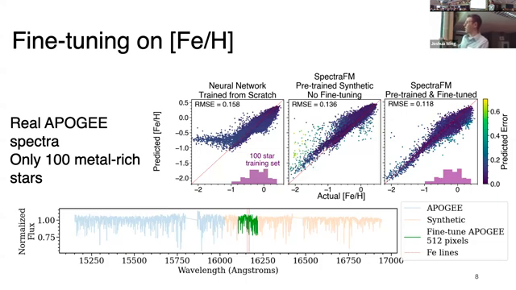

SpectraFM: Tuning into Stellar Foundation Models
Nolan Koblischke, Jo Bovy
AstroAI Workshop 2024
Introduction
Stellar astrophysics is a field rich with data, primarily from various spectroscopic surveys. The advent of machine learning has transformed how we interpret these vast datasets, offering new ways to derive stellar properties from observed spectra. However, the challenge remains when the available data is limited or incomplete. To address this, we introduce SpectraFM, a foundation model tailored for stellar astrophysics. This paper discusses the model's architecture, its training on large-scale spectroscopic data, and its performance on tasks with limited data.
Figure 1: Introduction to SpectraFM.
Stellar Spectra
The APOGEE (Apache Point Observatory Galactic Evolution Experiment) survey provides high-resolution near-infrared spectra for over 657,000 stars. This dataset includes measurements of stellar properties such as temperature, surface gravity, and chemical abundances, derived from synthetic spectra grids using the ASPCAP pipeline.
Figure 2 shows a normalized spectrum from APOGEE, highlighting key features and the derived stellar parameters for a given star. The breadth and quality of APOGEE data make it ideal for training machine learning models, as evidenced by numerous studies leveraging this dataset for scientific insights.

Figure 2: Overview of APOGEE and stellar spectra.
Measurement of Galactic Distance
Accurate distance measurements to the Galactic center are crucial for understanding the Milky Way's structure and dynamics. Recent studies, such as the one illustrated in Figure 3, utilize the kinematics of bar stars combined with spectrophotometric distances derived from neural network methods. These methods improve the precision of distance measurements, enhancing our understanding of Galactic dynamics.
Figure 3: Using kinematics of bar stars for distance measurement.
Dynamical Heating across the Milky Way
The study of dynamical heating in the Milky Way disc, shown in Figure 4, involves analyzing the kinematics of stars with different chemical compositions. By employing Bayesian neural network models, researchers have estimated the ages of stellar populations, revealing distinct age-velocity dispersion relations for low and high [Fe/H] populations. These findings shed light on the Galactic disc's dynamical history and evolution.

Figure 4: Study on dynamical heating using APOGEE and Gaia.
Motivating Problem
A significant challenge in stellar spectroscopy is the limited availability of data for certain tasks, such as the determination of metallicities ([Fe/H]) for metal-poor stars. As illustrated in Figure 5, training a neural network with data from only 100 metal-rich stars results in poor performance for metal-poor stars. This limitation highlights the need for models that can generalize well even with sparse training data.

Figure 5: Addressing the problem of limited metal-rich star data.
Pre-training & Foundation Models
The concept of foundation models, which are pre-trained on large datasets and then fine-tuned for specific tasks, has shown great promise in various domains, including astrophysics. Figure 6 emphasizes the importance of pre-training on similar tasks to achieve higher accuracy. For example, pre-training a model on images from the Galaxy Zoo survey significantly improves performance on tasks involving new datasets, such as JWST images.
Figure 6: Importance of pre-training on similar tasks.
Pre-training for Spectra
Transformers, known for their flexibility in input size and capability to handle varying data types, are particularly suited for pre-training on stellar spectra. As illustrated in Figure 7, we embed pixel wavelengths and fluxes into a continuous embedding space, allowing the model to process spectra of different resolutions and wavelength ranges. This approach enables the model to handle diverse observational data from various instruments and surveys.
Figure 7: Transformer architecture for spectra pre-training.
Fine-tuning on [Fe/H]
The fine-tuning process involves adapting a pre-trained model to specific tasks with limited data. Figure 8 demonstrates the performance of our model fine-tuned on real APOGEE spectra for predicting [Fe/H]. Even with only 100 metal-rich stars, the model generalizes well to metal-poor stars, significantly outperforming models trained from scratch.

Figure 8: Fine-tuning on [Fe/H] using real APOGEE spectra.
SpectraFM: A Foundation Model for Astronomers
SpectraFM aims to be a versatile foundation model pre-trained on a wide array of datasets, including spectra from surveys like LAMOST, GALAH, and Gaia. Figure 9 outlines potential use cases, such as inferring stellar parameters, generating synthetic spectra, and filling in missing spectral regions. By leveraging diverse training data, SpectraFM provides a robust starting point for various astronomical tasks, enhancing the efficiency and accuracy of subsequent fine-tuning efforts.

Figure 9: Overview of SpectraFM and its applications.
Conclusion
In summary, SpectraFM represents a significant advancement in applying foundation models to stellar astrophysics. By pre-training on extensive datasets and fine-tuning for specific tasks, this approach addresses the limitations of data scarcity and enhances model performance across a wide range of applications. Future work will focus on expanding the pre-training dataset and exploring new tasks to further improve the model's generalizability and utility for the astronomical community.
Figure 10: Concluding remarks on SpectraFM.